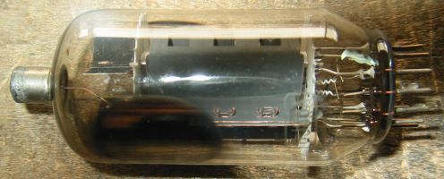
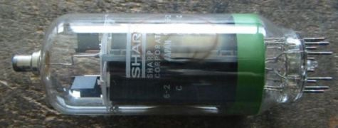
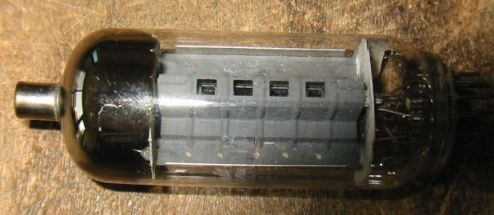

| 型名 | 規格 | その他 |
|---|---|---|
| 6JS6A/6JS6C /23JS6A | Ef/If=6.3V/2.25A、Ep/Pp=990V/28W、Esg/Psg=220V/5.5W、Gm=11300、μ2=3、 6JS6C Ep/Pp=990V/30W、Esg/Psg=190V/5.5W、Gm=11500、μ2=3.0、  |
*6JS6についてのその他のデータ |
| 6KD6/30KD6/36KD6/40KD6 | Ef/If=6.3V/2.85A、Ep/Pp=990V/33W、Esg/Psg=200V/5.0W、Gm=14000、μ2=4、  | *6KD6についてのその他のデータ |
| 6LF6/6MH6などそのほかのコンパクトロン |  | *その他のコンパクトロンのデータ |